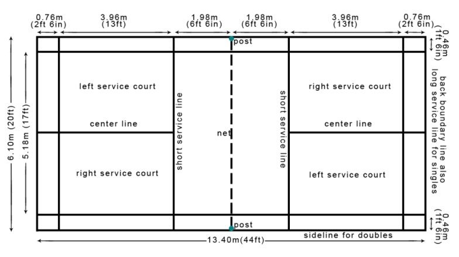

<- Kembali
Bulu Tangkis
3 Materi
Pengertian
Bulu tangkis atau badminton adalah suatu olahraga raket yang dimainkan oleh dua orang (untuk tunggal) atau dua pasangan (untuk ganda) yang saling berlawanan. Bulu tangkis bertujuan memukul bola permainan ("kok" atau "shuttlecock") melewati jaring agar jatuh di bidang permainan lawan yang sudah ditentukan dan berusaha mencegah lawan melakukan hal yang sama. Bulu tangkis atau badminton digemari banyak orang. Bahkan, tidak sedikit pemain Indonesia pernah menjadi juara dunia. Seperti Rudi Hartono, Liem Swie King, Susi Susanti, Taufik Hidayat, dan lain-lain. Mereka berprestasi karena perjuangannya yang hebat, rajin berlatih, dan menguasai gerak spesifik-gerak spesifik dasar bermain.
Sarana dan Peralatan
a. Bola/kok/shuttlecock
Bagian kok terdiri atas kepala dan bulu. Kepala terbuat dan gabus. Berat kok sekitar 4,73-5,50 gram.
b. Lapangan
Bentuk lapangan bulu tangkis empat persegi panjang. Ukuran lapangan dan netnya sebagai berikut.
1) Ukuran lapangan untuk permainan tunggal panjang 13,4 m dan lebar 5,18 m.
2) Ukuran lapangan untuk permainan ganda panjang 13,4 m dan lebar 6,10 m.
3) Ukuran net sama untuk tunggal dan ganda tinggi net 1,55 m, panjang 6,10 m dan lebar net 0,67 m.
c. Raket
Raket adalah alat pemukul dalam permainan bulu tangkis. Berat raket kurang dari 150 gram. Raket terbuat dari kayu, alumunium, arang (carbonex), dan fiberglass.